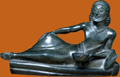

Sparta
 |
|
Together with Athens, Sparta is one of the best known city-states of
ancient Greece, but during the classical period, it was a very different
place to Athens.
Sparta was ruled by two kings and a Council of Elders. There was an
assembly of citizens, but this did not have the power of the citizen
assembly in democratic Athens. |
| During the 5th century BC Sparta was very powerful. This was due to her
army, which was feared by other Greeks. Sparta focused on producing good
soldiers and all Spartan male citizens were part of the army. The Spartan
army played an important role in the Greek victory over the Persians, in
480-479 BC. |
|
 |
However, archaeological evidence shows us that Sparta was not always such a military-minded city. In earlier times, Spartan bronze and ivory workers produced beautiful objects and poetry flourished. Objects from this period provide evidence of this highpoint in Spartan culture.

|
|
|
How Sparta became a city of soldiers
|
Explore objects from Sparta to see what they tell us about Spartan life
|
Can you survive the Spartan education programme?
|

|
|